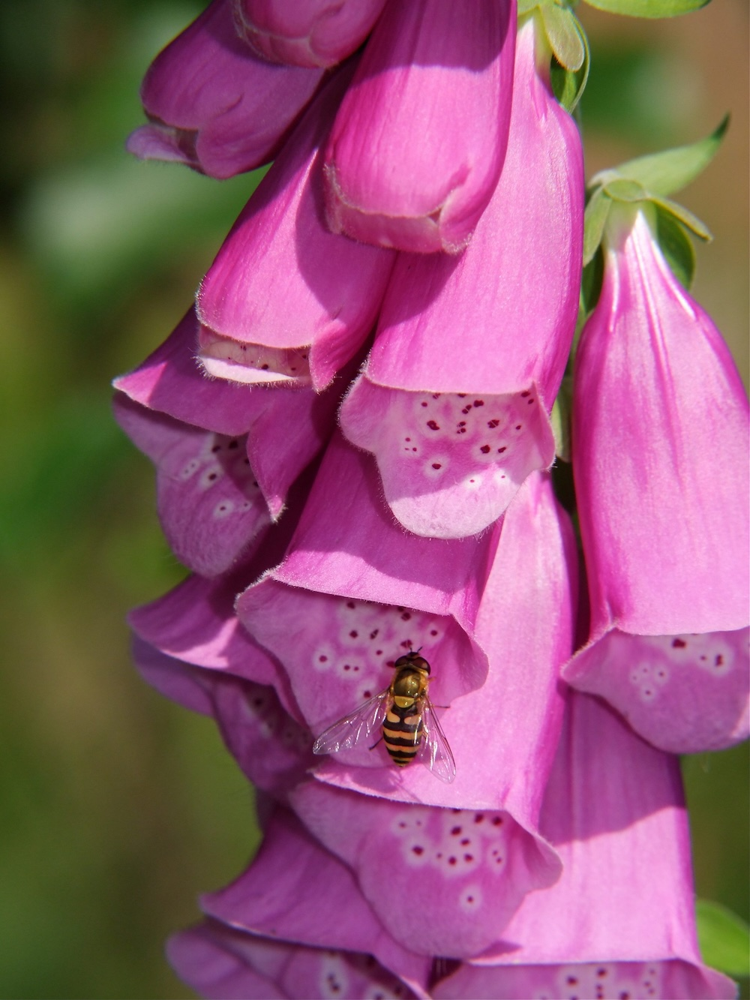

Glockenturm der Waldlichtung — schön und gefährlich zugleich.


Die Apotheke am Waldweg
Der Rote Fingerhut enthält Digitalis-Glykoside, die seit dem 18. Jahrhundert in der Herzmedizin verwendet werden. Sie regulieren den Herzschlag und stärken die Pumpkraft. Was als Lebensretter dient, ist in höherer Dosis tödlich: Bereits wenige Blätter können bei Menschen schwere Vergiftungen auslösen. Die Pflanze gehört nicht zufällig zu den „Giftpflanzen des Jahres" — Hände weg, Augen drauf.
Boten-Hummeln in der Glocke
Die hängenden Blütenglocken sind perfekt auf Hummeln zugeschnitten. Innen dunkel gepunktet („Nektarmal"), das wie eine Landebahn zum Nektar führt. Die Hummel kriecht tief in die Glocke, streift dabei oben die Staubblätter und bestäubt unbeabsichtigt die nächste Pflanze. Honigbienen sind zu klein, um die Glocke richtig zu bestäuben.
Wissenswertes & Merksätze
Erkennungszeichen
Aufrechter, unverzweigter Stängel bis 2 m hoch. Untere Blätter groß, weichhaarig, runzelig. Glocken einseitswendig hängend, rosapurpur, innen weiß mit dunklen Punkten.
Lichtkeimer und Brandfolger
D. purpurea ist eine klassische Pionierpflanze nach Waldschlag oder Brand. Seine Samen können Jahrzehnte im Boden überdauern und keimen erst, wenn Licht und Bodenstörung hinzukommen.